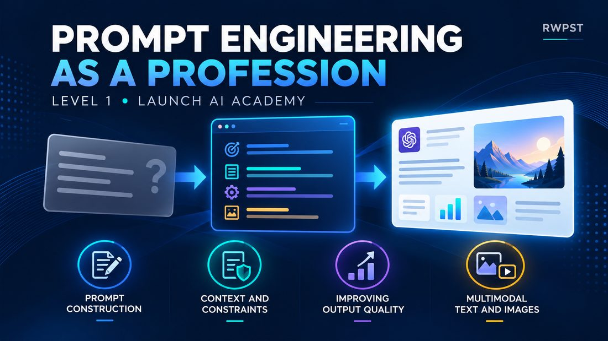

تعليمات عامة
طلب واسع
اكتب لي مقالًا عن الذكاء الاصطناعي.
النتيجة قد تكون عامة أو ناقصة، لأن الجمهور والطول والهدف والمراجع غير محددة.
RWPST AI Academy
Prompting Like a Pro
اتعلم تبني برومبت أوضح، وتضيف السياق المناسب، وتراجع مخرجات الذكاء الاصطناعي، وتحسّن النتيجة بشكل منظم.
الكورس لمن يريد مقدمة منظمة في Prompt Engineering، ولمن يستخدم أدوات الذكاء الاصطناعي ويحتاج طريقة أوضح لصياغة الطلب ومراجعة الناتج.
599 ج.م
السعر الظاهر حاليًا في صفحة المنتج. عند الدفع، صفحة الشراء هي المرجع، ولا نعرض هنا خصمًا.
فيديو تعريفي بالكورس. الصوت لا يبدأ إلا عندما تضغط تشغيل.
الفرق ليس في طول الجملة. الفرق في وضوح المهمة، والمعلومات التي تساعد النموذج على فهم المطلوب، والحدود التي تمنع الإجابة من الانحراف.
تعليمات عامة
اكتب لي مقالًا عن الذكاء الاصطناعي.
النتيجة قد تكون عامة أو ناقصة، لأن الجمهور والطول والهدف والمراجع غير محددة.
مهمة + سياق + قيود + مراجع
اكتب مقالًا قصيرًا عن فوائد الذكاء الاصطناعي لفريق مبيعات مبتدئ. استخدم لغة مباشرة، ولا تتجاوز 250 كلمة، واعتمد على النقاط المرفقة. إذا لم تغطِّ المراجع معلومة، فاذكر ذلك بدل اختراعها.
النتيجة تكون أقرب إلى المطلوب، ويمكن مراجعتها ثم تعديل البرومبت إذا ظهر نقص.
هذا مثال توضيحي للفكرة، وليس اقتباسًا حرفيًا من الدروس. البرومبت الأفضل يرفع جودة التعليمات ويساعد على التحسين بالتكرار. هو لا يضمن مخرجًا مثاليًا، والمراجعة البشرية تبقى جزءًا من العمل.
الكورس مقسّم إلى 4 وحدات. عناوين الدروس التالية مأخوذة من ملفات الفيديو الحالية، ومعها وصف قصير بالعربية ليسهل تصفحها.

الوحدة 1
From Basic to Professional Prompts
من الطلب العام إلى برومبت أوضح: بناء التعليمات على خطوات، والاستعانة بالذكاء الاصطناعي في الصياغة، مع مثال عملي.
الوحدة 2
From Basic Prompts to Better AI Results
تحسين البرومبت بعد رؤية النتيجة: التكرار، والسياق، والقيود، مع تطبيق عملي. مواد الوحدة تشمل دليل مكتبة Persona.
الوحدة 3
تحسين جودة مخرجات الذكاء الاصطناعي
التعامل مع المخرج كمسودة تُراجع: فهم الهلوسة، وتقسيم المهمة عبر Prompt Chaining، ثم استخدام القيود والسياق لتقليل الإجابات غير المدعومة.
الوحدة 4
Visual, Multimodal & Responsible AI
الانتقال من النص إلى الصور والمدخلات المتعددة، ثم مراجعة الناتج مع الانتباه إلى الخصوصية والتحقق والحكم البشري.
هذه الموارد موجودة في ملفات الكورس أو مذكورة في صفحة المنتج الحالية. تسليمها مع طلب الشراء لم يُختبر من هذه الصفحة.
مكتبة شخصيات لتحديد الدور والأسلوب عند كتابة البرومبت، ومعها دليل عرض خاص بالمكتبة داخل مواد الوحدة الثانية.
مكتبة سياق تتضمن اختصارات البرومبت. في الملفات الحالية، الاختصارات جزء من مكتبة السياق وليست مكتبة ثالثة منفصلة.
عروض Blueprint للوحدات، ودليل مكتبة Persona، ومراجع محتوى مرافقة للتطبيق والمراجعة.
حزمة موارد المستوى الأول تشمل كراسة تمارين، معرضًا لتحسين البرومبت، قالب برومبت، خريطة تعلم، ومشروعًا ختاميًا.
صفحة المنتج تذكر تطبيقًا عمليًا باستخدام RWPST AI Studio. الأداة الموجودة اليوم تطبيق سطح مكتب لويندوز لاستعراض المكتبات وبناء البرومبت. طريقة تسليمها بعد الدفع تحتاج تأكيدًا.
مناسب لمن يريد بداية مرتبة في Prompt Engineering، ولمن جرّب أدوات الذكاء الاصطناعي ويريد تعليمات أدق. المواد التي رُاجعت لا تحدد شرط خبرة سابقة، لذلك لا نفترض أن الكورس بلا أي متطلبات.
لمن يريد فهم كتابة البرومبت بطريقة مرتبة، بدل التجربة العشوائية مع أدوات الذكاء الاصطناعي.
لمن يكتب أو يلخّص أو يحلّل أو يجهّز نصًا وصورة، ويحتاج أن يشرح المهمة والسياق والقيود بوضوح.
لمن يريد أن يفحص الناتج، ويعدّل البرومبت، ويحتفظ بمراجع يعيد استخدامها لاحقًا.
المسار العملي في الكورس يربط الشرح بالمثال، ثم بالتطبيق والمراجعة، مع أدلة ومراجع تبقى معك بعد الدرس.
تبدأ كل وحدة بمفهوم واضح، مثل بناء البرومبت أو السياق أو مراجعة المخرج.
الدروس تعرض كيف تتحول التعليمات العامة إلى طلب أوضح، ثم كيف تُراجع النتيجة.
كراسة التمارين والمشروع الختامي موجودان في حزمة الموارد لتطبيق ما شاهدته.
التكرار جزء من الكورس: ترى الفجوة، وتعدّل البرومبت، ثم تعيد النظر في الناتج.
مكتبات Persona و Context، وقوالب البرومبت، وأدلة الوحدات تبقى مراجع للرجوع إليها.
Prompt Engineering هو المسار المتاح الآن، ويبدأ بكورس Prompting Like a Pro. المساران التاليان اتجاهان تعليميان لاحقان، وليسا متاحين للشراء.
متاح الآن
نقطة البداية الحالية: كيف تكتب البرومبت، وتضيف السياق، وتراجع مخرجات الذكاء الاصطناعي وتحسّنها.
اشترك في Prompting Like a Proقيد التطوير
اتجاه تعليمي مخطط حول الاستخدام الأوسع للذكاء الاصطناعي التوليدي. لا يوجد موعد إصدار، وهو غير متاح للشراء.
قيد التطوير
اتجاه تعليمي مخطط حول وكلاء الذكاء الاصطناعي. لا يوجد موعد إصدار، وهو غير متاح للشراء.
لمن يريد مقدمة منظمة في Prompt Engineering، ولمن يستخدم أدوات الذكاء الاصطناعي ويريد طريقة أوضح لكتابة البرومبت ومراجعة الناتج. لا تذكر المواد التي رُاجعت شرط خبرة محددًا، ولا نقول إن الكورس لا يحتاج أي معرفة سابقة.
أربع وحدات: بناء البرومبت من الصيغة العامة إلى صيغة أوضح، تحسين البرومبت عبر السياق والقيود والتكرار، رفع قابلية مراجعة المخرجات، ثم البرومبت البصري ومتعدد الوسائط مع التحقق والخصوصية والحكم البشري. تفاصيل الدروس في قسم المحتوى.
مكتبة Persona، ومكتبة Context وفيها اختصارات البرومبت، وأدلة وعروض للوحدات، وكراسة تمارين، وقالب برومبت، ومعرض تحسين، وخريطة تعلم، ومشروع ختامي. صفحة المنتج تذكر أيضًا التطبيق العملي باستخدام RWPST AI Studio.
من زر «اشترك في الكورس». تنتقل إلى صفحة المنتج على منصة الأكاديمية لإتمام الطلب والدفع. هذه الصفحة لا تجمع بيانات البطاقة ولا تنفّذ عملية دفع. وسائل الدفع تظهر في صفحة الشراء، ولم نُثبتها هنا.
معالجة الطلب تتم عبر منصة الأكاديمية. مسار فتح المحتوى بعد الدفع لم يُختبر ضمن هذا المشروع، لذلك لا نحدد هنا مدة الوصول أو خطوات الدخول. راجع صفحة المنتج أو الأكاديمية إذا كانت طريقة الوصول حاسمة قبل الشراء.
مدة الوصول، وسياسة الاسترداد، والشهادة غير مذكورة في المواد التي رُاجعت. هذه التفاصيل تحتاج تأكيدًا من صفحة المنتج أو من الأكاديمية قبل الإطلاق، ولا نعرض لها حكمًا هنا.
إذا كنت تريد أن تنتقل من الطلبات العشوائية إلى تعليمات أوضح، ومراجعة أفضل للناتج، فهذا الكورس هو نقطة البداية المتاحة الآن في الأكاديمية.
الاشتراك والدفع يتمّان من صفحة المنتج. هذه الصفحة لا تعالج الدفع.